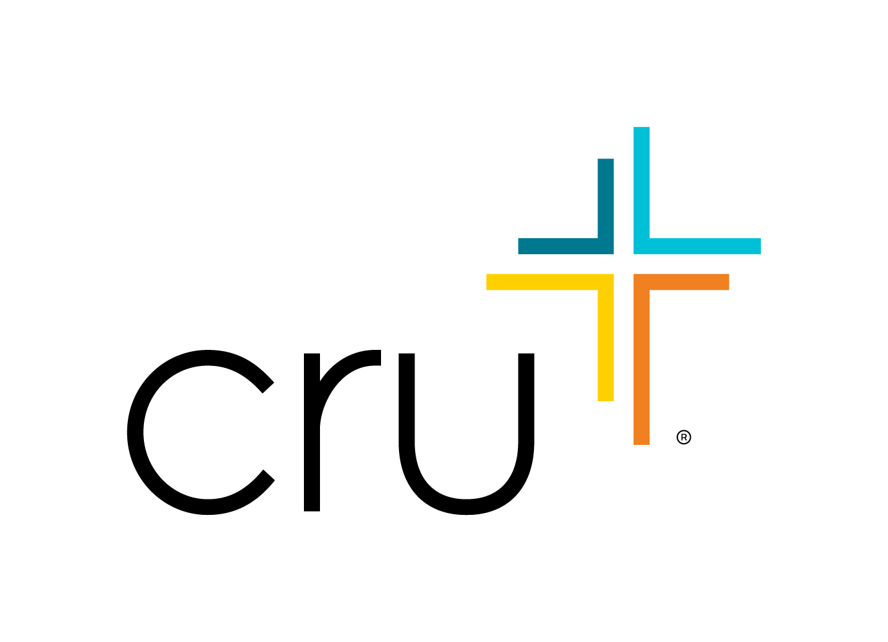

MoldovaCum să faci o faptă bună în Moldova fără să deschizi portofelul? Legea îți permite să direcționezi 2% din impozitul pe venit, care a fost deja reținut, către fapte bune. Altfel, acești bani pur și simplu intră în bugetul de stat.
Direcționăm cu transparență fondurile către nevoile actuale prin inițiativele Cru Moldova.
Ajutăm tinerii să găsească repere corecte în viață, să-și dezvolte caracterul și calitățile de lider într-un mediu sigur.
Sprijinim sportivii în căutarea performanței și îi ajutăm să crească fizic, emoțional și spiritual, fiind modele în socitate.
Aducem speranță prin proiecte digitale și biserici locale, sprijinind spiritual și oferind ghidare fiecărui om.
Organizația juridică ce colectează fondurile pentru mișcarea Cru Moldova este Asociația Obștească "Pro Valoare". Indică codul nostru unic (IDNO) atunci când depui declarația pe venit (CET18).
Alege o metodă convenabilă pentru tine. Îți va lua doar câteva minute.
Accesează portalul Serviciului Fiscal de Stat prin sistemul de autentificare MPass (ai nevoie de semnătură electronică sau mobilă).
Găsește și deschide formularul electronic CET18 (Declarația persoanei fizice cu privire la impozitul pe venit).
Mergi la secțiunea obligatorie M1 (Desemnarea procentuală) și lipește codul copiat anterior: 1014620001450.
Confirmă și trimite declarația folosind semnătura ta. Gata, ai făcut o faptă bună!
Vei avea nevoie doar de actul de identitate (buletin). Nu este necesară semnătura electronică.
Apropie-te la orice direcție de deservire fiscală a Serviciului Fiscal de Stat (SFS) din orașul sau raionul tău.
Spune inspectorului că dorești să depui declarația pe venit pentru a direcționa cele 2% către o organizație caritabilă.
Prezintă sau dictează-i inspectorului codul nostru unic (IDNO): 1014620001450.
Termenul limită de depunere a declarației pentru persoanele fizice în Moldova este de obicei 30 aprilie. Te rugăm să încerci să faci acest lucru până la această dată, pentru ca donația ta să ajungă la destinație în acest an.
Nu, procesul este 100% confidențial. SFS transferă organizației nonguvernamentale (ONG) suma totală cumulată de la toți cei care au direcționat. Noi nu aflăm numele tău, salariul sau suma impozitului achitat de tine personal.
Absolut nu. Direcționezi doar 2% din impozitul care deja ți-a fost reținut din salariu de către stat pe parcursul anului trecut. Nu te costă niciun leu în plus, ci pur și simplu decizi destinația pentru o mică parte din taxele tale.
Da, este posibil, atâta timp cât pe parcursul anului precedent ai avut o sursă de venit oficială și impozabilă în Moldova, din care a fost calculat impozitul pe venit.